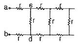
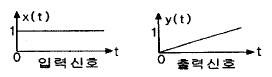
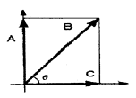

승강기기사 (2006-09-10 기출문제)
1과목: 승강기 개론
1. 과부하감지장치(Over load Switch) 가 동작되는 부하(하중)의 세팅범위는 몇 % 범위인가?
- 90 ~ 100
- 100 ~ 1⑤
- 1⑤ ~ 110
- 110 ~ 125
(정답률: 58%)

2. 스탭체인이 늘어나든지 절단 되었을 경우 에스컬레이터를 정지 시키는 안전장치는?
- 스탭체인 안정장치
- 핸드레일 인입구 안전장치
- 구동체인 안정장치
- 스커트가드 안정장치
(정답률: 72%)
3. 속도 60m/min, 8인승, 층수, 16층인 비상용엘리베이터가 카바닥에서 카주 긑까지의 거리가 3m 일 때 오버 헤드 (Over Head) 는 몇 m 인가?
- 4.0
- 4.4
- 4.6
- 4.8
(정답률: 75%)
4. 견인비(Traction ratio) 의 선정 방법은?
- 무부하시와 전부하시의 값이 동일하게 하고 그 값이 적도록 한다.
- 무부하시와 전부하시의 값의 차가 크게 하고 그 값도 가능한 크게 한다.
- 균형비 값은 커야 하고 무부하시와 전부하시의 값은 동일해야 한다.
- 균형비 값은 적어야하고, 무부하시와 전부하시의 값은 고려하지 않는다.
(정답률: 78%)
5. 권상기에서 구동 도르래(sheave) 의 유효지름은 주로프 지름의 몇 배 이상이어야 하는가?
- 10
- 20
- 30
- 40
(정답률: 78%)
6. 교류 엘리베이터에서 가장 많이 사용하고 있는 전동기는?
- 농형유도전동기
- 교류정류자전동기
- 분권전동기
- 직권전동기
(정답률: 73%)
7. 조속기의 회전속도가 정격속도를 넘을 때 기계적으로 감지하는 것은?
- 로프캐치 및 훅
- 진자와 전기스위치
- 진자 또는 볼
- 스프링과 전기스위치
(정답률: 70%)
8. 승강기용 권상기의 구성품이 아닌 것은?
- 웜기어
- 전동기
- 완충기
- 브레이크
(정답률: 74%)
9. 승강로의 벽 또는 울 및 출입문의 재료에 대한 설명으로 옳은 것은?
- 준불연재료로 만들거나 씌워야 한다.
- 불연재료로 만들거나 씌워야 한다.
- 난연재료로 만들거나 씌워야 한다.
- 준난연재료로 만들거나 씌워야 한다.
(정답률: 69%)
10. 엘리베이터의 제어방식에 따른 적용 속도의 설명으로 옳은 것은?
- 직류의 정지레오나드의 무기어방식은 주로 90 m/min 이상에 적용한다.
- 교류1차 전압제어방식은 120m/min 까지만 적용 가능하다.
- 가변전압가 변주파수방식은 모든 속도범위에 적용이 가능하다.
- 현제 세계에서 가장 빠른 엘리베이터 방식은 직류 정지FP오나드 방식이다.
(정답률: 70%)
11. 승강기의 적재 하중은 몇kg 단위로 표시하는가?(오류 신고가 접수된 문제입니다. 반드시 정답과 해설을 확인하시기 바랍니다.)
- 50
- 60
- 80
- 100
(정답률: 59%)
12. 카가 최상층이나 최하증을 지나지 않도록 카를 감속 제어하여 정지시킬 수 있도록 하는 것은?
- 리미트스위치
- 동력스위치
- 정지스위치
- 완충기용 스위치
(정답률: 64%)
13. 도어 머신(door machine) 이 보수가 용이하고 가격이 저렴한 것을 원한다면 다음 중 어느 전동기를 부착하는 것이 가장 좋은가?
- AC전동기
- DC전동기
- 감속기구 부착식
- 전동발전기식
(정답률: 50%)
14. 유압회로의 압력 조정밸브로서 일정치에 셋트 해두면 그 이상의 압력에서는 밸브를 열어 탱크에 기름을 되돌려 보내는 밸브는?
- 업밸브
- 릴리프밸브
- 체크밸브
- 다운밸브
(정답률: 79%)
15. 로프식 엘리베이터의 주행여유(runby) 에 대한 설명으로 옳은 것은?
- 카가 최하층에 정지했을 때 균형추와 완충기와의 거리 이다.
- 승강로 최상층의 승강장 바닥부터 기계실 지지보 또는 바닥 아래 면까지의 수직거리이다.
- 유입식 완충기까지는 최소거리에 대한 규정이 없다.
- 유입식 완충기의 최대거리는 속도에 따라 다르다.
(정답률: 37%)
16. 카의 정격 속도가 45m/min 인 엘리베이터에서 조속기의 과속스위치가 작동해야 하는 속도는 몇 m/min 를 초과하지 않아야 하는가?
- 60
- 63
- 65
- 68
(정답률: 62%)
17. 유압식 엘리베이터에서 작동유의 압력맥동을 흡수하여 진동, 소음을 감소시키는 역할을 하는 것은?
- 체크밸브
- 필터
- 사이렌서
- 스트레이너
(정답률: 80%)
18. 에스컬레이터에서 난간폭이 800형과 1200형의 시간당 수송 능력은 일반적으로 어떠한가?
- 800형 : 4000명, 1200형 : 6000명
- 800형 : 6000명, 1200형 : 8000명
- 800형 : 6000명, 1200형 : 9000명
- 800형 : 8000명, 1200형 : 12000명
(정답률: 73%)
19. 군관리 조작방식의 경우 승장에서 여러 대의 카의 위치표시를 볼 수 없으므로 응답하는 카의 도착을 알리는 장치는 어떤 것인가?
- 조작반
- 카 위치 표시기
- 승장 위치 표시기
- 홀 랜턴
(정답률: 76%)
20. VVVF제어 방식에서 인버터에 의한 제어방식은?
- PWM(Pulse Width Modulaton)
- PAM (Puose Amplitude Modulation)
- 교류귀환 전압제어
- 다이리스터 전압제어
(정답률: 78%)
2과목: 승강기 설계
21. 엘리베이터의 배치에 관한 설명으로 틀린 것은?
- 1뱅크 5대 이상의 직선배치는 보행거리가 길어서 좋지 않다.
- 고층용과 저층용 2뱅크의 대면거리는 서로 보이지 않도록 배치한다.
- 대면거리가 6m 이상의 알코브 배치는 좋지 않은 배치이다.
- 1뱅크 4~8대의 대면배치일 경우 대면거리는 3.5~4.5m 로 하고, 홀을 빠져 나가는 어려움이 발생치 않도록 동선을 계획하는 것이 좋다.
(정답률: 52%)
22. 가변전압제어방식과 교류궤환제어방식을 비교할 때 틀린 것은?
- 정지, 기동이 많을수록 소비전력의 차는 작아진다.
- 카를 조금 움직이는 경우에는 가변전압식이 교류궤환방식보다 소비전력도 적다.
- 동일 조건 즉, 용량 속도, 정지회수가 같다면 평형부하에서의 교류궤환방식이 가변전압식보다 더 많은 전력을 필요로한다.
- 가변전압식은 교류궤환방식보다 가속, 감속에 필요한 전력이 적다.
(정답률: 52%)
23. 지진대책에 따른 엘리베이터의 구조에 관한 설명이다. 틀린 것은?
- 지진이나 기타 진동에 의해 주로프가 도르래에서 이탈하지 않아야 한다.
- 엘리베이터의 균형추가 지진이나 기타 진동에 의해서 가이드 레일로부터 이탈하지 않아야 한다.
- 승강로내에는 지진시에 로프, 전선 등의 기능에 악영향이 발생하지 않도록 모든 돌출물을 설치하여서는 아니된다.
- 엘리베이터의 전동기, 제어반 및 권상기는 카마다 설치하고, 또한 지진이나 기타 진동에 의해 전도 또는 이동하지 않아야 한다.
(정답률: 72%)
24. 도어개폐장치에 대한 다음 설명 중 틀린 것은?
- 카가 주행하는 중에서 카 도어가 쉽게 열릴 수 있는 구조이어야 한다.
- 도어와 문틀(Jamb or Entrance Jamb) 이 겹치는 부분은 12mm 이상이어야 한다.
- 승강장 도어의 시건장치는 일반 공구로는 열수 없는 구조이여야 한다.
- 카 및 승장도어가 완전히 닫힌 상태에서 카가 출발할 수 있도록 설계되어야 한다.
(정답률: 65%)
25. 자동차용 엘리베이터의 카바닥을 설계하고자 한다. 1m2당정격용량은 약 몇 kg 정도가 적당한가?
- 100
- 150
- 200
- 250
(정답률: 45%)
26. 엘리베이터용 가이드 레일에 관한 사항으로 틀린 것은?
- 엘리베이터의 정격용량에 관계가 있다.
- 대형 화물용 엘리베이터의 경우 하중을 제재할 때 발생 되는 카의 회전 모멘트는 무시한다.
- 비상정지장치가 작동한 후에도 가이드 레일에는 좌굴이 없어야 한다.
- 레일 브라켓의 간격을 작게 하면 동일한 하중에 대하여 응력과 휨은 작아진다.
(정답률: 66%)
27. 유압승강기에서 고속에서 저속으로 전환되어 정지시켜주는 역할을 하는 밸브는?
- 릴리프밸브
- 스톱밸브
- 체크밸브
- 유량제어밸브
(정답률: 54%)
28. 6인승 승객용 승강장(AC-2 Speed Elevator)의 속도가 60m/min 인 승강기에 사용되는 주레일의 크기로 가장 적당한 것은?
- 3k
- 5k
- 8k
- 13k
(정답률: 66%)
29. 비상용 엘리베이터의 각 층 승가로 로비내에 용도, 최대 정원 및 적재하중을 명시한 표식의 크기는 일반적으로 어느 정도의 크기로 하는가?
- 가로 130mm, 세로 60mm 이상
- 가로 140mm, 세로 70mm 이상
- 가로 80mm, 세로 150mm 이상
- 가로 90mm, 세로 160mm 이상
(정답률: 32%)
30. 카의 자중이 1,020kg, 적재하중이 900kg, 정격속도가 60m/min 인 로프식 승강기의 피트 충격하중은 약 몇kg 인가?(단, 조속기는 정격속도의 1.3배에서 트립이 발생하고 완충기의 행정(stroke)은 1⑤mm 이다.
- 6,263
- 6,993
- 7,243
- 7,953
(정답률: 32%)
31. 카 자중 1,200kg, 정격하중 600kg, 1:1 로핑, 길이가 200cm인 승객용 엘리베이터 상부 프레임 (crosshead)의 안전율은 약 얼마인가? (단, 상부 프레임 재료의 파괴 강도는 4,100kg/m2, 단면계수 250m3 로 한다.)
- 11.4
- 16.4
- 19.1
- 22.1
(정답률: 25%)
32. 재료의 단순 인장에서 포아송 비는 어떻게 나타내는가?
- 세로변형률/가로변형률
- 부피변형률/가로변형률
- 가로변형률/세로변형률
- 부피변형률/세로변형률
(정답률: 23%)
33. 두께와 지름의 비가 0.1 이하인 얇은 원통에 내압이 가해 질때 가로(원주)방향의 응력과 세로(축) 방향의 응력의 상관관계는?
- 가로(원주)방향의 응력은 세로(축)방향의 응력의 반이다.
- 가로(원주)방향의 응력은 세로(축)방향의 응력과 같다.
- 가로(원주)방향의 응력은 세로(축)방향의 응력의 2배이다.
- 가로(원주)방향의 응력은 세로(축)방향의 응력의 4배이다.
(정답률: 44%)
34. 조명전원에 사용되는 인입선 굻기에 대한 설명으로 옳은 것은?
- 전선의 길이에 비례한다.
- 허용전압 강하율에 비례한다.
- 전원을 공용하는 병렬설치 대수에 반비례한다.
- 조명용 스위치의 크기에 비례한다.
(정답률: 52%)
35. 다음은 유입 완충기의 설계조건이다. 틀린 것은?
- 최대 적용중량은 적재하중의 100% 로 한다.
- 행정 계산시 정격속도의 115%로 충돌했을 경우의 속도로한다
- 카가 충돌하였을 경우 1G이상의 감속도가 유지되어야 한다.
- 플렌저를 완전히 압축했을 경우 90초 이내에 완전히 복귀해야한다.
(정답률: 55%)
36. 다음은 와이어로프의 구성에 의한 분류이다. 틀린 것은?
- 씰형
- 필러형
- 워링톤형
- 스트랜드형
(정답률: 50%)
37. 승객용 엘리베이터의 권상기 권상도르래에 관한 설명으로 틀린 것은?
- 마모와 마찰계수를 고려하여 도르래 재료는 주물을 사용한다.
- 도르래 직경은 주로프 직경의 40배 이상으로 하여야 한다.
- 마찰계수를 올리기 위하여 언더컷 홈으로 한다.
- 도르래 직경을 주로프직경의 40배 이상으로 하는 이유는 도르래 수명을 증대시키기 위해서이다.
(정답률: 54%)
38. 엘리베이터의 하강속도가 점점 증가하여 200m/ min로 되는 순간 점착작동식 비상정지장치가 하여 0.5초 후에 카가 정지하였다면 평균 감속도는 얼마인가?
- 0.35G
- 0.68G
- 0.7G
- 1.0G
(정답률: 54%)
39. 정격속도 45m/min 이하에 사용되는 조속기의 과속 스위치 작동 속도는?
- 60m/min 이하에서 작동
- 63m/min 이상에서 작동
- 63m/min 이하에서 작동
- 65m/min 이하에서 작동
(정답률: 39%)
40. 승강기 검사 중 기계실에서 행하지 않는 것은?
- 전동기 주회로 절연저항 측정
- 조속기의 작동상태
- 전동기의 운전상태
- 도어장치 열림력 검사
(정답률: 70%)
3과목: 일반기계공학
41. 강의 경도를 높이기 위한 방법으로 730~800℃로 가열한 후 물이나 기름 속에서 급냉 시키는 열처리 방법은?
- 담금질
- 뜨임
- 풀림
- 불림
(정답률: 83%)
42. 시험편의 경도를 알아내는 시험 중 해머를 일정 높이에서 시편 위에 떨어뜨려 반발높이에 의한 경도를 측정하는 시험 방법은?
- 로크웰 경도시험
- 브리넬 경도시험
- 비커스 경도시험
- 쇼어 경도시험
(정답률: 59%)
43. 코터 폭이 4cm, 두께가 2cm, 코터의 허용 전단응력이 75kgf/m2 일 때, 코터에 가할 수 있는 허용 전단하중은 약 몇 kgf 인가?(오류 신고가 접수된 문제입니다. 반드시 정답과 해설을 확인하시기 바랍니다.)
- 600
- 1200
- 1800
- 2400
(정답률: 40%)
44. 원추 접촉면의 평균지름이 500mm, 마찰면의 폭이 40mm, 원추 접촉면 허용압력이 0.8kgf/cm2 , 수 1,000 rpm 이고, 접촉면의 마찰계수가 0.3 인 원추 클러치의 전달 동력은 몇 kw 인가?
- 38.7
- 52.6
- 77.4
- 1⑤.2
(정답률: 32%)
45. 유니버어설 이음 (universal joint) 에 대한 설명으로 다음 중 가장 적합한 것은?
- 2축이 평행하고 있을 때 만 사용되는 커플링이다.
- 2축이 교차하고 있을 때 사용되는 커플링이다.
- 2축이 평행하고 있을 때 사용되는 클러치이다.
- 2축이 교차하고 있을 때 사용되는 클러치이다.
(정답률: 79%)
46. 코일 스프링에 관한 일반적인 특징 설명으로 틀린 것은?
- 압축 스프링의 단면은 원형과 각형이 있다.
- 제작이 쉽고 가격이 싸며, 형태와 단면의 형상에 따라 여러 가지로 분류 된다.
- 인장 스프링은 양단에 훅을 만들어 사용하며, 하중이 작용하지 않을 경우 코일이 밀착될 수 있다.
- 여러 장이 판을 맞대어 사용하며, 하중은 상하 방향으로 작용하여 판의 마찰에 의해 변화하기 쉽다.
(정답률: 47%)
47. 묵형에서 코어(core)를 사용하는 주물의 특징 설명으로 가장적합 것은?
- 속이 빈 주물
- 크기가 작은 주물
- 크기가 큰 주물
- 외형이 복잡한 주물
(정답률: 80%)
48. 드릴구멍에 암나사를 깎는데 사용하는 수공구인 것은?
- 톱
- 탭
- 리머
- 다이스
(정답률: 79%)
49. 마찰 펌프, 와루 펌프, 웨스코 펌프라고도 하며 송출량이 적고 양정이 높은 곳에서 사용되는 것은?
- 제트펌프
- 재생펌프
- 기포펌프
- 왕복펌프
(정답률: 46%)
50. 유압 및 공기압 용어 중 ‘감압밸브, 체크 밸브, 릴리프 밸브등에서 밸브 시트를 두드려 비교적 높은 음을 내는 일종의 자려 진동현상 을 의미하는 용어는?
- 피드백
- 언더랩
- 채터링
- 오버랩
(정답률: 74%)
51. 단동 왕복펌프 피스톤 지름이 20 cm, 피스톤의 매분 왕복횟수가 80, 체적효율 92% 일 때 펌프의 양수량은 약 몇m3/min 인가?
- 0.35
- 0.7
- 0.82
- 1.4
(정답률: 38%)
52. 탄소가아의 인장강도, 항복점, 피로한도, 크리이프 한도, 탄성한도, 허용응력에서 안전율을 구하는 식으로 다음 중 가장 적당한 것은?
- 탄허성용응한도력
- 인피로장강한도도
- 크리탄성이프한도한도
- 인허용장강응도력
(정답률: 53%)
53. AI-Si계 대표적인 합금으로 자동차, 선박 기구, 계기의 하우징 등으로 많이 쓰이는 알팩스라고도 하는 합금은?
- 듀랄루민
- 로엑스
- Y합금
- 실루민
(정답률: 45%)
54. 특수주조법으로 금형 속에 용융금ㅁ속을 주입하여 주조하는것으로 대량생산에 적합하고 제품이 정밀한 것은?
- 셀 올드법
- 원심 주조법
- 다이캐스팅
- 인베스트먼트법
(정답률: 69%)
55. 선반에서 4개의 죠(jaw) 가 각각 움직일 수 있어 불규칙한 일감을 고정시키는데 적합한 척은?
- 단동척
- 연동척
- 콜릿척
- 전자척
(정답률: 66%)
56. 다음 중 양 끝을 받치고 있는 보로, 양단 지지보라고도 하는 보는?
- 단순보
- 외팔보
- 고정보
- 연속보
(정답률: 61%)
57. 두 축이 만나지도 않고, 평행하지도 않는 기어는?
- 웜과 웜 기어
- 베벨 기어
- 헬리컬 기어
- 스퍼 기어
(정답률: 67%)
58. 용접에서 피복제의 일반적이 기능 설명으로 틀린 것은?
- 생성한 슬래그는 용착 금속을 차폐하고 용접의 냉각 속도를 촉진 시킨다.
- 용착 금속의 기공생성을 억제하고 기계적 성질을 좋게 한다.
- 아크발생 및 유지를 용이하게 한다.
- 슬래그 제거가 쉽고, 고운비드를 만든다.
(정답률: 59%)
59. 알루미늄 합금인 두랄루민의 표준성분에 해당하지 않는 원소는?
- Cu
- Co
- Mg
- Mn
(정답률: 80%)
60. 스프링의 일반적인 용도 설명으로 잘못된 것은?
- 진동 또는 충격 에너지를 흡수한다.
- 운동 에너지를 열에너지로 소비한다.
- 에너지를 저축하여 놓고 이것을 동력원으로 사용한다.
- 하중 및 힘의 측정에 사용한다.
(정답률: 74%)
4과목: 전기제어공학
61. 단위계단의 동작신호를 가할 때 적분시간 T = 1분의 적분 동작을 시키는 경우 조작량 X0가 10 이 되기까지는 몇 분이걸리겠는가?
- 1
- 4
- 10
- 20
(정답률: 61%)
62. r = 2Ω인 저항을 그림과 같이 무한히 길게 연결할 때 ab 사이의 합성저항은 몇 Ω 인가?

- 0
- ∞
- 2
- 2(1+√3)
(정답률: 45%)
63. 4극 60Hz 의 3상 유도전동ㄷ기가 있다. 1725 rpm 으로 회전하고 있을 때 2차 기전력의 주파수는 약 몇 Hz 인가?
- 2.5
- 7.5
- 52.5
- 57.5
(정답률: 49%)
64. 비파괴측정방법의 종류가 아닌 것은?
- 자기탐상법
- 초음파탐상법
- 방사선탐상법
- 인장강도탐상법
(정답률: 70%)
65. R=8Ω, XL=2Ω, XC=8Ω 의 직렬회로에 100V 의 교류 전압을 가할 때, 전압과 전류의 위상 관계로 옳은 것은?
- 전류가 전압보다 37〫7도 뒤진다.
- 전류가 전압보다 37도 앞선다.
- 전류가 전압보다 43도 뒤진다.
- 전루가 전압보다 43도 앞선다.
(정답률: 49%)
66. 피드백 제어시스템의 피드백 효과가 아닌 것은?
- 오차 경감
- 안정도
- 전체 이득
- 입력신호
(정답률: 55%)
67. 연산증폭기의 응용회로가 아닌 것은?
- 적분기
- 아날로그 가산증폭기
- 미분기
- 디지털 반가산증폭기
(정답률: 46%)
68. 피드백 제어계어세 제어요소에 대한 설명 중 옳은 것은?
- 목표값이 비례하여 신호를 발생하는 요소이다.
- 조작부와 검출부로 구성되어 있다.
- 조절부와 검출부로 구성되어 있다.
- 동작신호를 조작량으로 변화시키는 요소이다.
(정답률: 69%)
69. 다음 중 인버터의 기능을 갖는 회로는?
- AND 회로
- OR회로
- NOT 회로
- 기억회로
(정답률: 59%)
70. PLC(Programmable Logic Controller)의 CPU부의 구성과 거리가 먼 것은?
- 데이터 메모리부
- 프로그램 메모리부
- 연산부
- 전원부
(정답률: 68%)
71. 전력에 대한 설명으로 옳지 않은 것은?
- 단위는 J/s 이다.
- 단위시간의 전기 에너지이다.
- 공률과 같은 단위를 갖는다.
- 열량으로 환산할 수 있다.
(정답률: 70%)
72. 직류 전동기의 속도제어법이 아닌 것은?
- 전압제어
- 계자제어
- 저항제어
- 주파수제어
(정답률: 69%)
73. 그림과 같이 출력이 입력신호의 적분값에 비례하는 요소에 해당하는 전달함수는?

- G(S) = K
- G(s) = KS
- G(S)=K/S
- G(S)=K/TS+1
(정답률: 38%)
74. 자동제어 계통의 안정도를 판별하는 것이 아닌 것은?
- 보드선도법
- 나이키스트 판별법
- 브록선도법
- 루쓰-흘비쯔 판별법
(정답률: 69%)
75. 계단 입력에 대한 시스템의 바람직한 응답특성을 출력하기까지의 시간은?
- 상승시간
- 무응답시간
- 시정수
- 세틀링시간
(정답률: 63%)
76. 자기회로에서 퍼미언스(permeance) 에 대응하는 전기 회로의 요소는 무엇인가?
- 도전율
- 컨덕턴스
- 정전용량
- 엘라스턴스
(정답률: 68%)
77. 제어기의 설명 중에서 잘못된 것은?
- 계자, 보극, 정류자
- 브러시, 계자, 전기자
- 정류자, 전기자, 계자
- 보극, 전기자, 브러시
(정답률: 70%)
78. 제어기의 설명 중에서 잘못된 것은?
- P 제어기 : 잔류편차 발생
- I 제어기 : 잔류편차 소멸
- D 제어기 : 오차예측제어
- PD 제어기 : 응답속도 지연
(정답률: 65%)
79. 조작기기로 사용되는 서보 전동기의 설명 중 틀린 것은?
- 제어범위가 넓고 특성 변경이 용이하여야 한다.
- 시정수와 관성이 클수록 좋다.
- 서보 전동기는 그다지 큰 회전력이 요구되지 않아도 된다.
- 급 가⋅감속 및 정⋅역운전이 용이하여야 한다.
(정답률: 60%)
80. 다음은 역률이 θ 인 교류전력의 벡터도이다. 이때 실제로 일을 한 전력은 어느 벡터인가?

- A
- B
- C
- B,C
(정답률: 65%)